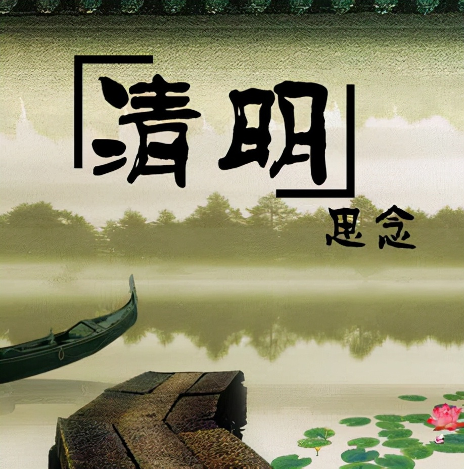

清明节是中华民族的重要传统节日，历史上一度成为仅次于春节的盛大节日。在传统社会中，清明节的节期持续时间较长（五六天到十几天，各地各时代不等)，一方面是扫墓祭奠、怀念离世亲人的节日，一方面是踏青嬉游、亲近大自然的节日。直到今天，清明节仍然是中华民族包括海外华人的重要节日之一。
节气起源
古代时期，清明节只是一个提醒农民进行春耕春种的节气。《淮南子·天文训》记：“春分后十五日，北斗星柄指向乙位，则清明风至。”《岁时百问》说：“万物生长此时，皆清洁而明净，故谓之清明。”清明一到，气温升高，雨量增多，正是春耕春种的大好季节 。《月令七十二候集解》说：“按《国语》曰，时有八风，历独指清明风，为三月节。此风属巽故也。万物齐乎巽，物至此时皆以洁齐而清明矣。”“八风”即八方来风，古代历书所说的“清明风”是来自东南方，东南方即《周易》所说的巽方。《周易》又有万物“齐乎巽”之语，“齐”即“洁齐”之意，农历三月一到，气清景明，万物皆显，这就是“清明”得名的来由。节日与节气不同，节气是时序的标志，而节日则包含着某种风俗和纪念的意义。清明节作为一个节日，它的出现则稍晚一些，且有一个逐渐演变的过程。
据古籍文献记载，中国传统的扫墓开始于周代，已有两千五百多年的历史 。在西周时期的著作《周礼·春官·冢人》中就记载了祭墓习俗，并且设立冢人、墓大夫分别掌管朝廷的公墓和庶民的邦墓；东周战国时期的文献《孟子·齐人篇》中记载了战国时期一个齐国人到东郭坟墓间乞食扫墓的祭品，说明此时扫墓仪式已经较为寻常；秦汉时期，祭扫坟墓已成为不可或缺的礼俗活动，古代文献《汉书·严延年传》记载了御史严氏跋涉千里回家祭扫祖坟。不过，在周秦乃至两汉，这种祭祀祖先的活动并没有明确在清明日，也没有清明节一说 。
唐朝时，寒食节与清明节是两个不同的节日，由于统治者重视儒家治国的战略，以孝行天下，拜扫祭祖之风较为兴盛。唐玄宗把历代没有纳入规范的墓祭归入五礼之中，并下诏规定寒食节扫墓为“五礼”之一，并在清明日前二日，放假三天，上至宫廷下至民间，人们将寒食节扫墓视为返本追宗的仪节。至此，清明节作为节日开始形成，并融合了寒食节的习俗；而上巳祓禊除灾的仪式在唐代更加娱乐化，曲水流觞等一系列春天欢宴形式兴盛，上巳节的内容也被融入到清明节中
宋元时，清明节逐渐由附属于寒食节的地位上升到取代寒食节的地位，再加上寒食被元人所摒弃，上巳节逐渐淡化，清明节融合了寒食节与上巳节的冷食、荡秋千、踏青等风俗活动精华，形成了一个以祭祖扫墓为中心的传统节日。宋代诗人高菊卿在《清明》中写“南北山头多墓田，清明祭扫各纷然。纸灰飞作白蝴蝶，泪血染成红杜鹃。日出狐狸眠冢上，夜归儿女笑灯前。人生有酒须当醉，一滴何曾到九泉。”就反映了当时清明节上坟祭祖的景况
明清时期大体承接前代旧制，清明节祭拜祖先、悼念已逝亲人的习俗仍然盛行。明清时期还盛行清明节迎城隍祭厉的做法，“城隍”是我国民间信仰世界中的城市保护神，也是拘管亡魂之神，“厉”则是无所归依的孤魂野鬼
民国政府曾将清明节定为国定假日，也称民族扫墓节中华民国建立后不久，清明节的发展史上出现了一个重要的变化，那就是它曾在1915年被规定为植树节，在这天，机关、学校都要进行植树活动。人类离不开树木，定清明节为植树节就是对植树造林和保护森林的倡导，国民政府还将这项活动与农业紧密联系起来。到1928年时，植树节被改在孙中山先生逝世纪念日（3月12日），清明节作为植树节的历史就此终止，但仍有一些地方保留了清明植树的做法
中华人民共和国成立后，清明节的节俗出现了较大变化，突出表现在两个方面。其一，在扫墓习俗方面，由于政府的提倡，去革命烈士陵园扫墓，缅怀先烈事迹，已成为许多组织和个人的选择。其二，表现在清明节俗活动除扫墓、踏青之外，大多处于迅速衰落的态势。20世纪中期以前，诸如荡秋千、放风筝、斗蛋等活动还在清明节为人们带来许多乐趣，而今天已很少有人能够领略那种快乐与趣味了
扫墓祭祖是清明的重要内容之一。清明扫墓，即为“墓祭”，谓之对祖先的“思时之敬”，祭扫祖先是对先人的缅怀方式，其习俗由来久远。据考古发掘，广东英德青塘遗址发现了万年前的墓葬，经加速器质谱（AMS）测定，年代距今13500年左右，时代为旧石器时代晚期，是中国年代最早的可确认葬式的墓葬，表明距今1万多年前，岭南古人已具有明确的有意识墓葬行为和礼俗观念。清明节在历史发展中承载了丰富的文化内涵，全国各地因地域不同而又存在着习俗内容上或细节上的差异。清明礼俗文化充分体现了中华民族礼敬祖先、慎终追远的人文精神。在祖先祭祀仪式中慎终追远，在踏青郊游中享受春天，文化传承与身心调适是清明礼俗文化的重要功能。
踏青这种节令性的民俗活动，在中国有着悠久的历史，其源泉是远古农耕祭祀的迎春习俗，这种农耕祭祀的迎春习俗对后世影响深远。踏青风俗至唐宋尤盛。据《旧唐书》记载：“大历二年二月壬午，幸昆明池踏青。” 清明节兼具节气与节日两大内涵，清明节气在时间和气象物候特点上为清明踏青习俗的形成提供了重要条件。清明时节，春回大地，自然界到处呈现一派生机勃勃的景象，正是郊游的大好时光。人们乃因利趁便，扫墓之余亦一家老少在山乡野间游乐一番。
